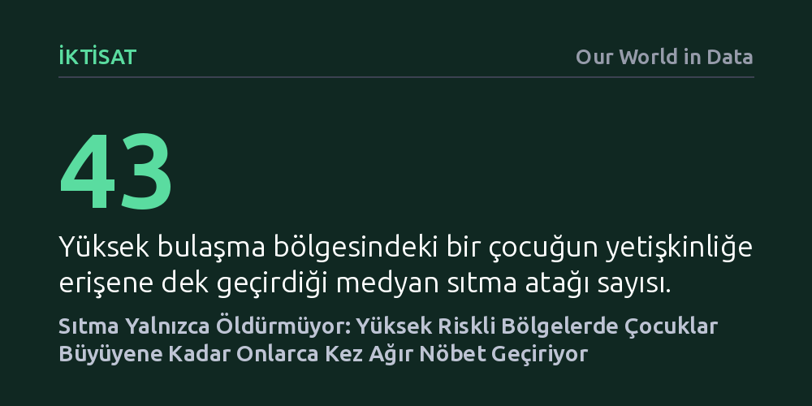

IKTISAT · Our World in Data · 2026-09-07
Sıtma tartışmaları çoğunlukla ölümlere odaklansa da veriler, yüksek riskli bölgelerdeki çocukların büyüyene dek ortalama 43 kez, bazen 100'den fazla bu ağır hastalığı geçirdiğini gösteriyor. Bu aralıksız nöbetler çocukların gelişimini engelliyor; oysa iki dolarlık cibinliklerle bulaşmayı 25 kat azaltmak mümkün.
Sıtmanın yarattığı yıkımı yalnızca can kayıpları üzerinden ölçme alışkanlığını kırıp, hastalığın asıl trajedisinin çocukların gelişimini ve çocukluğunu ellerinden alan aralıksız ıstırap döngüsü olduğunu gösteriyor.

Sıtma dendiğinde küresel kamuoyunun dikkati neredeyse her zaman ölüm rakamlarına kilitleniyor. Her yıl 600 binden fazla insanın, bilhassa da çocukların hayatını kaybetmesi elbette devasa bir trajedi. Ancak yalnızca ölümlere odaklanmak, hastalığın hayatta kalan yüz milyonlarca insan üzerinde bıraktığı korkunç fiziksel tahribatı gözden kaçırmamıza yol açıyor. Dünyada her yıl yaklaşık 280 milyon sıtma vakası yaşanıyor; bu da küresel ölçekte yaklaşık her 30 kişiden birinin bu hastalıkla sarsıldığı anlamına geliyor.
Sıtma geçirmek hafif bir grip belirtisiyle başlasa da hızla vücudu tüketen şiddetli bir krize dönüşüyor. İnsanı zangır zangır titreten derin titremeler ve ter boşanmaları, dayanılmaz eklem ve baş ağrıları, ayağa kalkmayı imkânsız kılan mide bulantıları ve kusmalar hastayı günlerce yatağa mahkûm ediyor. Bir yetişkini dahi perişan eden bu deneyim, sıtmanın yoğun görüldüğü coğrafyalardaki çocuklar için istisnai bir kriz değil, çocukluk döneminin sıradan ve aralıksız bir gerçeği.
Sıtma küresel düzeyde tropikal kuşakta görülse de asıl yıkıcı yükünü Sahra Altı Afrika taşıyor. Benin, Mozambik, Nijerya ve Sierra Leone gibi ülkelerde her yıl 100 kişi başına yaklaşık 30 yeni vaka kaydediliyor. Bu oran, Kolombiya veya Hindistan gibi diğer riskli bölgelerdeki oranların neredeyse 100 katına denk geliyor. İlk bakışta bu veri, bu ülkelerde yaşayan her üç kişiden birinin yılda bir kez sıtmaya yakalandığı izlenimini verebilir; oysa gerçek bundan çok daha sarsıcı ve eşitsiz bir tablo çiziyor.
Yetişkinler, yıllar boyu parazite maruz kalarak kısmi bir bağışıklık geliştirdikleri için hastalığı çocuklara kıyasla çok daha seyrek ve hafif geçiriyor. Dolayısıyla enfeksiyon yükünün neredeyse tamamı bağışıklık sistemi henüz gelişmemiş çocukların omuzlarına biniyor. Örneğin Benin'de beş yaş altındaki her 100 çocuğa karşılık yılda 98 vaka, Nijerya'da ise 79 vaka düşüyor. Üstelik bu oranlar dahi sadece bölgesel ortalamalardır. Salgının yoğun olduğu Burkina Faso ve Uganda gibi ülkelerde çocuklar yılda 5 ila 6 kez sıtmaya yakalanıyor; yani neredeyse iki ayda bir, henüz bir önceki atağın halsizliğini üzerlerinden atamadan yeniden ağır bir nöbetle yatağa düşüyorlar.
Senegal'de 1990 ile 2015 yılları arasında yürütülen ve çocukları doğumlarından itibaren 10 ila 25 yıl boyunca kesintisiz izleyen boylamsal bir çalışma, bu durumun insani maliyetini çıplak bir biçimde ortaya koydu. Araştırmada incelenen tipik bir çocuk, çocukluğu boyunca medyan olarak tam 43 kez sıtma nöbeti geçirdi. Bu, bir çocuğun hayatının ilk yıllarını neredeyse kesintisiz bir hastalık ve iyileşme döngüsü içinde tükettiği anlamına geliyor.
Çalışmadaki en sarsıcı bulgu ise bazı çocukların maruz kaldığı aşırı tabloydu: İncelenen çocuklardan dördü hayatı boyunca 100 veya daha fazla kez sıtmaya yakalanırken, rekor düzeydeki bir çocuk tam 112 kez bu acıyı yaşadı. En az hastalanan çocuk bile 11 kez sıtma nöbeti geçirmişti. Aylarca süren bu fiziksel tahribat sadece dayanılmaz ağrılar yaratmakla kalmıyor; çocukların kronik biçimde yetersiz beslenmesine, bağışıklıklarının çökmesine ve hem zihinsel hem de bedensel gelişimlerinin kalıcı olarak aksamasına yol açıyor.
Bu karanlık tablo kader değil; üstelik çözümü bilinen ve şaşırtıcı derecede ucuz bir sorunla karşı karşıyayız. Senegal'deki uzun soluklu araştırma, 25 yıllık takip sürecinde halkın böcek ilacı emdirilmiş cibinliklere ve koruyucu önlemlere erişimi arttıkça sıtma vakalarının tam 25 kat azaldığını belgeledi. Bulaşmayı neredeyse tamamen kesebilen bu basit aracın maliyeti yalnızca 2 dolar.
GiveWell gibi bağımsız kuruluşların hesaplamaları, cibinlik bağışlarının sadece binlerce hayat kurtarmakla kalmayıp on binlerce ağır enfeksiyonu daha başlamadan engellediğini gösteriyor. Sıtmayla mücadelenin nihai hedefi, her gün hayatını kaybeden 1.320 çocuğu yaşatmanın da ötesinde, yazarın ifadesiyle 'milyonlarca çocuğa hiçbir grafiğin yansıtamayacağı bir şeyi, yani çocukluklarını geri vermektir.'